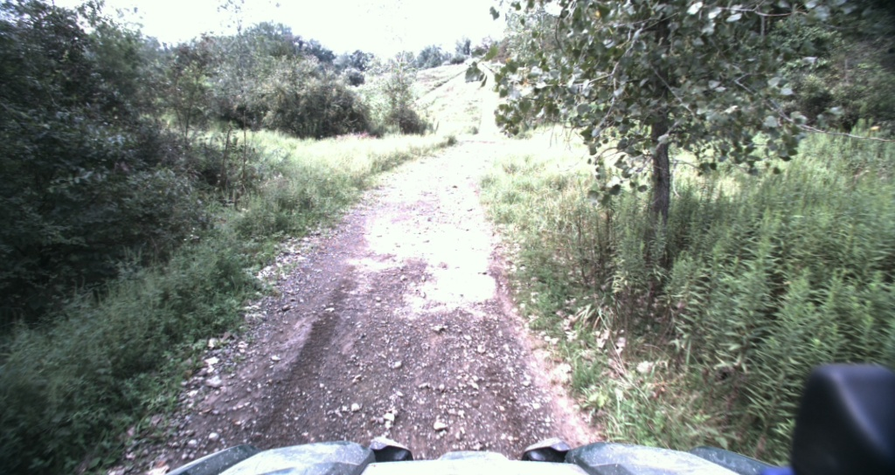

LCVN-WM + LCVN-AC
Latent-imagination policy learning
Initial view + instruction
Imagined statesActions
A diffusion world model imagines future visual states. An actor–critic learns a navigation policy inside those imagined rollouts.
Language-Conditioned World Modeling
for Visual Navigation
LCVN studies action-sequence prediction from one initial egocentric image and a language instruction, without a goal image or intermediate environmental feedback. The proposed agents also imagine future observations.
Trajectory counts reported in the paper. The public release includes train, validation seen, and validation unseen.
Browse dataset files ↗| Split | Trajectories | Public release |
|---|---|---|
| Train | 28,813 | Available |
| Validation seen | 3,602 | Available |
| Validation unseen | 1,500 | Available |
| Test | 5,101 | Not released |
Walk straight down the hallway, turn left at the corner, and stop near the end of the corridor.
Original annotation · validation seen · same indoor episode as below


Go Stanford · ReCon · SCAND · HuRoN
Indoor and structured outdoor navigation.TartanDrive
Off-road trajectories used for zero-shot evaluation.Normalize motion and segment routes from five source datasets.
Human seed examples guide Qwen-3.5-9B using frames, a 2D path and metadata.
Human review checks route alignment and the three instruction styles.
Frames and maps support annotation; navigation inference receives only the initial image and instruction.
Appendix A · Figure A1 ↗Start with one image and a language instruction. Reveal the recorded future observations and position samples to explore a dataset trajectory.

Initial observationInitial observation os and language instruction I. The goal is specified through language.
An action sequence of planar displacements and yaw, ending with a null action. The proposed agents additionally predict future observations.
Learn to act inside an imagined world, or predict actions and observations with one shared model. Select a block below to explore its role.
Latent-imagination policy learning
A diffusion world model imagines future visual states. An actor–critic learns a navigation policy inside those imagined rollouts.
Unified autoregressive prediction
At each autoregressive step, LCVN-Uni jointly predicts the next action and observation. The predicted observation feeds the next step; no new camera view is received.
Simplified schematics based on Paper Figures 2–3. Open the original figures for the full training and inference procedures.
Follow the turns. Watch the landmarks. Compare the published predictions across models, one column at a time.
Swipe to compare models →
Two complementary questions: does the agent follow the route, and how well does it imagine the visual future? Explore the paper’s results under each evaluation protocol.
If you use LCVN in your research, please cite our paper.
@inproceedings{dong2026language,
title={Language-Conditioned World Modeling for Visual Navigation},
author={Dong, Yifei and Wu, Fengyi and Dai, Yilong and Kong, Lingdong
and Chen, Guangyu and Sha, Yetong and Hu, Qiyu and Liu, Feng
and Huang, Siyu and Dai, Qi and Cheng, Zhi-Qi},
booktitle={Advances in Neural Information Processing Systems},
year={2026},
url={https://arxiv.org/abs/2603.26741}
}